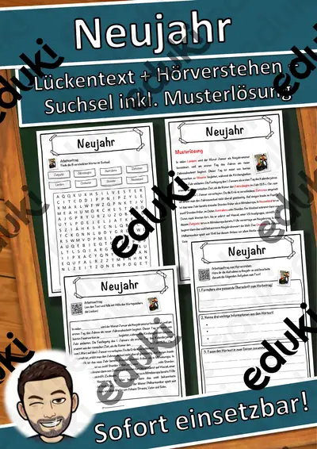

Das Frühlingsfest – Neujahr in China – Lesespurgeschichte mit Rätselaufgaben (Klasse 5)
Das Frühlingsfest – Neujahr in China – Lesespurgeschichte Ethik (Klasse 5)Schick deine Klasse auf eine Lesespur durch eine Wohnung am chinesischen Neujahrsabend! Ich-Erzählerin Paula ist zum ersten Mal bei ihrer Freundin Lin zum Frühlingsfest eingeladen und lernt von Oma Wei die Bräuche kennen – Maskottchen ist die Papierlaterne Lampi. Von der Haustür über Besenkammer, Wohnzimmer, Kalenderwand, Küche, Esstisch und Balkon bis in den Innenhof führt der Weg. Am Ende jedes Abschnitts verrät ein Hinweis den nächsten Ort auf dem Plan – nur wer genau liest, findet den Weg und sammelt alle geheimen Buchstaben zum Lösungswort.
Die passende Lesespur für Ethik in Klasse 5 (auch 4 und 6) – ideal im Januar und Februar zu Festen anderer Kulturen, Riten und Ritualen, für Stationenlernen oder Vertretungsstunden. Ohne Marken. Geeignet für Mittelschule, Realschule, Gymnasium und Gesamtschule. Das Material ist SOFORT EINSETZBAR und in DREI DIFFERENZIERUNGSSTUFEN (leicht ★ / mittel ★★ / schwer ★★★) angelegt.WICHTIG: Das komplette Material ist sowohl in FARBE als auch in SCHWARZ-WEISS enthalten – ideal zum Sparen von Druckkosten.DAS IST ENTHALTEN
- Lesespurgeschichte in 3 Niveaus (leicht, mittel, schwer)
- farbiger Plan der Wohnung als Suchkarte
- Hörverstehen mit QR-Code zur MP3 (selbstständiges Hören mit Kopfhörern)
- vier Aufträge auf dem Weg: eine Zuordnung, ein Quiz, eine Rechenaufgabe in der Küche und ein Steckbrief
- Rätselseite (Wörter-Suchsel + Rätselfragen rund um das Frühlingsfest)
- Ausmalbild zum Thema
- ausführliches Lösungsblatt für die Lehrkraft mit allen Lösungen (Lesespur, Aufträge, Hörverstehen, Rätselseite)
- alles zusätzlich als komplette Schwarz-Weiß-VarianteSO GEHT DIE LESESPURDie Schülerinnen und Schüler lesen ab START, finden im Text den nächsten Ort, suchen ihn auf dem Plan und lesen bei dieser Station weiter. An jeder richtigen Station gibt es einen Buchstaben. Eingeplante Sackgassen (Garderobe, Aquarium, Bücherregal, Treppenhaus) sind keine Stationen und dienen der Selbstkontrolle. Am Ende werden die gesammelten Buchstaben umgestellt und ergeben ein geheimes Lösungswort. (Die Lösungen sind selbstverständlich nur im Lösungsblatt für die Lehrkraft enthalten.)INHALTLICHER SCHWERPUNKTDas wandernde Datum nach dem Sonne-Mond-Kalender, Hausputz vor dem Fest, rote Spruchbänder und das kopfüber hängende Glückszeichen, die Legende vom Ungeheuer Nian, Teigtaschen und Fisch als Symbole, rote Umschläge, zwölf Tierkreiszeichen, Laternenfest, respektvoller Umgang mit Bräuchen anderer Kulturen.ABGEDECKTER LEHRPLAN (Klasse 5)
- Ethik – Kulturen und Religionen: Feste, Riten und Rituale anderer Kulturen kennenlernen und respektvoll begegnen (LehrplanPLUS Bayern Ethik 5).
- Mathematik – Addieren und Malnehmen im Sachzusammenhang.
- Deutsch – Sachtexte sinnentnehmend lesen; einem Hörtext gezielt Informationen entnehmen (Hörverstehen mit MP3).Geeignet für Freiarbeit, Stationenlernen, Vertretungsstunden, Wochenplan und als Einstieg ins Thema.
Ähnliche Materialien

Silvester und Neujahr – Bräuche zum Jahreswechsel – Lesespurgeschichte mit Rätselaufgaben (Klasse 2)

Neujahr – Hörverstehen mit Lückentext (interaktiv)

Neujahr Lückentext mit Wortspeicher Hörverstehen und Suchsel

China Lückentext mit Wortspeicher Hörverstehen und Suchsel

Chinesische Mauer Lückentext mit Wortspeicher Hörverstehen und Suchsel

Jahr Lückentext mit Wortspeicher Hörverstehen und Suchsel

Chinesische Sprache Lückentext mit Wortspeicher Hörverstehen und Suchsel